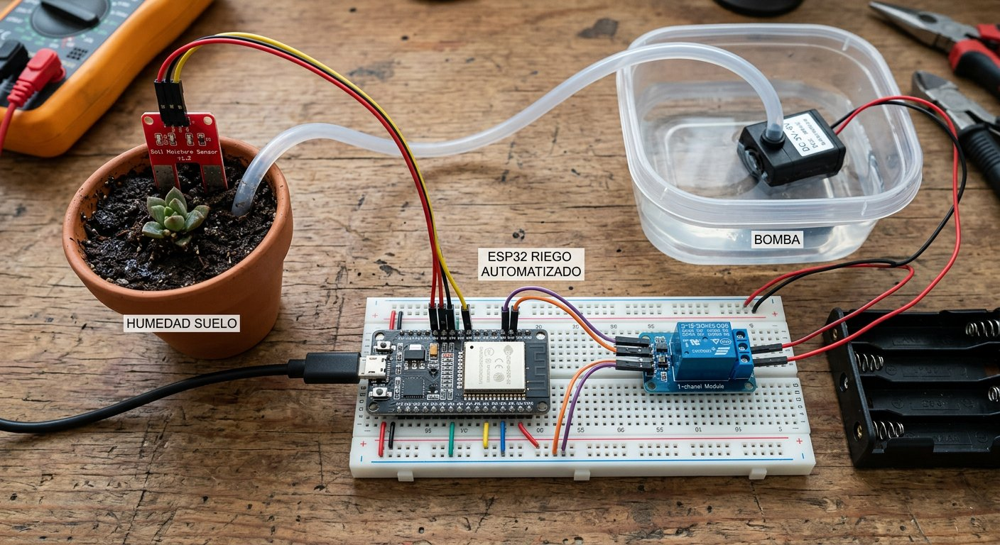

Qué cubre esta guía
Sensores de humedad: resistivo vs. capacitivo
Existen dos tipos principales de sensor de humedad de suelo, y la elección importa más de lo que parece:
| Aspecto | Resistivo | Capacitivo |
|---|---|---|
| Durabilidad | Baja (se corroe) | Alta (sin electrodos expuestos) |
| Estabilidad de lectura | Media | Alta |
| Precio | Muy barato | Barato |
| Recomendado | Solo para pruebas cortas | Proyectos a largo plazo |
El sensor resistivo tiene dos electrodos metálicos desnudos que se corroen por electrólisis con el tiempo, arruinando las lecturas y contaminando el sustrato. El capacitivo mide la humedad por la variación de la constante dieléctrica del suelo sin exponer metal, por lo que no se corroe y dura muchísimo más. Para un riego que funcione semanas o meses, la recomendación es clara: capacitivo.
Conexión del sensor al ESP32
Sensor de humedad ESP32
------------------ -----
VCC --> 3.3V (o 5V según el modelo)
GND --> GND
AOUT (analógica) --> GPIO 34 (pin ADC)El sensor entrega una señal analógica proporcional a la humedad: a menor lectura, más seco el suelo (en la mayoría de los modelos). Conéctalo a un pin ADC del ESP32 y lee con analogRead(); el valor crudo se interpreta después con la calibración.
Calibrar y mapear a porcentaje
Para trabajar con números con sentido, calibra el sensor en dos puntos y escala las lecturas a un rango de 0 a 100%:
- Con el sensor en aire (seco), lee y anota el valor: será el punto de 0% de humedad.
- Con el sensor en tierra húmeda o en agua, lee y anota el valor: será el punto de 100%.
- Escala las lecturas con la función
map()entre esos dos extremos.
int lecturaSeco = 3400; // ejemplo: valor en aire
int lecturaMojado = 1400; // ejemplo: valor en tierra saturada
int humedad = map(analogRead(PIN_SENSOR), lecturaMojado, lecturaSeco, 100, 0);
// Nota: los extremos se invierten porque a mayor humedad, menor lectura.
// Ajusta los valores con tus propias mediciones.Controlar la bomba con relé
La bomba de agua nunca se conecta directamente a un pin del ESP32: consume más corriente de la que el pin puede entregar y su motor genera picos de voltaje. El relé actúa de intermediario:
Módulo de relé ESP32 Bomba
-------------- ----- -----
VCC --> 5V
GND --> GND
IN --> GPIO 26
COM / NO ------------------> circuito de la bomba + fuente propia- El ESP32 solo entrega la señal de control al pin IN del relé.
- La bomba se alimenta con su propia fuente, separada de la lógica.
- El relé cierra o abre el circuito de la bomba sin que la corriente pase por la placa.
Lógica de umbral con histéresis
Si usas un solo umbral (por ejemplo, "riega cuando baje de 50%"), la bomba se enciende y apaga constantemente porque la lectura oscila alrededor de ese valor. La histéresis resuelve el problema con dos umbrales distintos:
- Umbral de encendido: si la humedad baja de 30%, enciende la bomba.
- Umbral de apagado: si la humedad sube de 60%, apaga la bomba.
La banda entre 30% y 60% es una "zona muerta" donde el sistema no cambia de estado, evitando el encendido y apagado constante. Esta misma técnica se usa en termostatos, sistemas de llenado de tanques y controladores industriales, y es una de las más valiosas para dominar.
Código completo del riego
const int PIN_SENSOR = 34; // pin ADC del sensor
const int PIN_RELE = 26; // pin de control del rele
// Umbrales con histeresis (ajusta segun tu calibracion)
const int HUMEDAD_ENCENDIDO = 30; // riega si baja de 30%
const int HUMEDAD_APAGADO = 60; // apaga si sube de 60%
// Duracion maxima de cada riego (seguridad)
const unsigned long TIEMPO_MAX_RIEGO = 60000UL; // 60 segundos
bool bombaEncendida = false;
unsigned long inicioRiego = 0;
int leerHumedad() {
int lecturaSeco = 3400; // valor en aire (0%)
int lecturaMojado = 1400; // valor en agua (100%)
int crudo = analogRead(PIN_SENSOR);
return map(crudo, lecturaMojado, lecturaSeco, 100, 0);
}
void setup() {
pinMode(PIN_RELE, OUTPUT);
digitalWrite(PIN_RELE, LOW); // bomba apagada al inicio
Serial.begin(115200);
}
void loop() {
int humedad = leerHumedad();
Serial.println(humedad);
if (!bombaEncendida && humedad < HUMEDAD_ENCENDIDO) {
// Tierra seca: encender la bomba
digitalWrite(PIN_RELE, HIGH);
bombaEncendida = true;
inicioRiego = millis();
}
if (bombaEncendida) {
bool humedadSuficiente = humedad > HUMEDAD_APAGADO;
bool tiempoExcedido = (millis() - inicioRiego) > TIEMPO_MAX_RIEGO;
if (humedadSuficiente || tiempoExcedido) {
digitalWrite(PIN_RELE, LOW);
bombaEncendida = false;
}
}
delay(5000); // mide cada 5 segundos (la humedad cambia lento)
}El TIEMPO_MAX_RIEGO es una salvaguarda importante: si el sensor se sale de la tierra o falla, la bomba no queda regando para siempre. Es un patrón de seguridad que todo actuador debe tener.
Monitoreo remoto de la humedad
El ESP32 ya tiene WiFi: aprovecha para ver la humedad desde el celular y regar manualmente si lo necesitas. Tienes dos caminos ya cubiertos en este sitio:
- Blynk: el camino más rápido para un panel con medidor de humedad y botón de riego manual.
- MQTT: para un sistema propio, publicando la humedad en un tema y suscribiéndote a comandos de riego.
Y para guardar el historial de humedad a lo largo de los días, el siguiente paso es ThingSpeak.
Problemas comunes y soluciones
| Síntoma | Causa probable | Solución |
|---|---|---|
| La bomba no enciende nunca | Umbral mal calibrado o relé invertido | Recalibrar y verificar la lógica del relé |
| La bomba se enciende y apaga sin parar | Falta de histéresis | Usar dos umbrales con banda muerta |
| El ESP32 se reinicia al arrancar la bomba | Fuente compartida con la bomba | Separar la alimentación de lógica y bomba |
| Lecturas que se degradan con el tiempo | Sensor resistivo corroído | Cambiar a un sensor capacitivo |
| La bomba queda encendida indefinidamente | Falta de límite de tiempo | Agregar TIEMPO_MAX_RIEGO de seguridad |
Conclusión
Un sistema de riego automático combina todo lo esencial del IoT: un sensor que percibe, una lógica que decide con histéresis, un actuador que ejecuta y una conexión inalámbrica que informa. Con un sensor capacitivo, un relé y un ESP32 tienes un jardinero automático confiable que cuida tus plantas y te avisa a distancia. El siguiente paso natural es guardar el historial con ThingSpeak o agregar control por voz con MQTT.
Preguntas frecuentes
¿Qué sensor de humedad de suelo es mejor: el resistivo o el capacitivo?
El sensor capacitivo es claramente superior para un proyecto que funcione a largo plazo. El sensor resistivo tiene dos electrodos metálicos desnudos que se corroen con el tiempo por electrólisis, entregando lecturas que empeoran y contaminando el sustrato; además sufre si se mantiene alimentado de forma continua. El sensor capacitivo mide la humedad por variación de la constante dieléctrica del suelo sin exponer electrodos desnudos, por lo que no se corroe, dura mucho más y entrega lecturas estables. La diferencia de precio es mínima y se compensa con creces en durabilidad.
¿Qué es la histéresis y por qué la necesita mi sistema de riego?
La histéresis es una técnica de control que usa dos umbrales distintos para encender y apagar: por ejemplo, enciende la bomba cuando la humedad baja de 30% y la apaga cuando sube de 60%. Sin histéresis, un solo umbral haría que la bomba se encienda y apague constantemente al oscilar la lectura alrededor del valor límite, desgastando el relé y la bomba y regando de forma ineficiente. La histéresis crea una banda muerta entre ambos umbrales que estabiliza el sistema, y es una de las técnicas de control más importantes y reutilizables.
¿Cómo calibro el sensor de humedad de suelo?
La calibración consiste en registrar la lectura del sensor en dos condiciones conocidas y mapear esos valores a porcentajes. El procedimiento: lee el valor analógico con el sensor en aire (suelo seco) y anótalo; luego, con el sensor clavado en tierra húmeda o en un vaso de agua, registra el valor correspondiente a la humedad máxima. Con esos dos puntos puedes escalar las lecturas a un rango 0-100% usando la función map() de Arduino. Recalibra para cada tipo de sustrato, porque la respuesta varía según la tierra usada.
¿Puedo conectar la bomba de agua directamente al ESP32?
No, y es un error frecuente que daña la placa. Una bomba de agua, aunque sea pequeña, consume más corriente de la que un pin del ESP32 puede entregar, y además su motor genera picos de voltaje al arrancar y apagar. Siempre debes usar un relé o un transistor (con diodo de protección) para que el ESP32 controle la bomba de forma indirecta, y alimentar la bomba con su propia fuente, separada de la lógica. El ESP32 solo entrega la señal de control al relé; la corriente de la bomba nunca pasa por la placa.
¿Cada cuánto tiempo debo medir la humedad del suelo?
La humedad del suelo cambia lentamente, por lo que no tiene sentido medirla muchas veces por segundo. Una lectura cada pocos minutos (por ejemplo, cada 1 a 5 minutos) es más que suficiente para el control de riego, y reduce el desgaste del sensor, el consumo y el ruido en las lecturas. Para el sensor resistivo, espaciar las lecturas y alimentarlo solo en el momento de medir alarga su vida útil; el capacitivo tolera mejor la alimentación continua, pero igual conviene medir con calma y promediar varias lecturas para estabilidad.
Este artículo es contenido editorial independiente: no contiene ubicaciones patrocinadas ni enlaces de afiliado. Si en futuras actualizaciones se agregan enlaces a proveedores de componentes, serán identificados explícitamente. El código y las conexiones son referenciales y deben adaptarse y probarse con tu propio hardware. Si detectas un error en esta guía, por favor avísanos.
Sigue aprendiendo
Guarda el historial de humedad y riego con ThingSpeak, o agrega control manual desde el celular con Blynk.
Fuentes primarias y lecturas recomendadas
Referencias que sustentan los conceptos generales de la guía. Los valores exactos pueden variar según el fabricante del sensor.
- Arduino Reference — analogRead()
- Arduino Reference — map()
- Espressif — Documentación oficial del ESP32
Enlaces revisados: 13 de agosto de 2026.